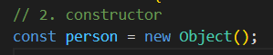
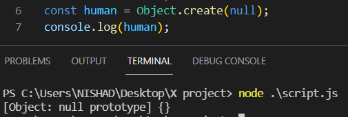
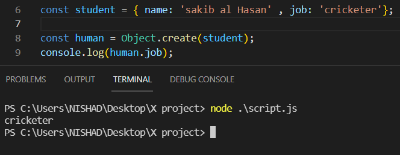
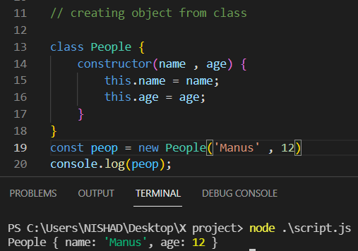
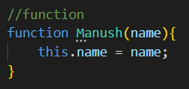

Different way to create objects
object অনেক ভাবেই diclare করা যায় ।

তার propertry গুলা shared হবে , অন্যেন্ন object থেকে propertry গুলা ব্যেবহার করতে পারবে । ) (আর যদি কার কাছ থেকে inharite করতে না চাই তবে null দিতে হবে )

এটাকে log করলে , object এর type , null আসবে ।

এখানে উপরের student object থেকে inharite করে নিয়ে আসছি । তাই উপরের (student) object টার মান human object এর মধ্যে দেখা যাচ্ছে ।
js class এর মাধ্যমেও object তৈরি করা যায় । ______ 95% সময়ে আমরা এটাকে ব্যেবহার করবো _____ কিছু কিছু ক্ষেত্রে নিচের জিনিস গুলা দরকার হইতে পারে ।

যখন js এর মধ্যে class ছিলনা তখন নিচের system এ class এর কাজ করা লাগতো

Es6 আসার পোর থেকে , class এর ব্যেবহার করা হয় ।
তবে চাইলে এভাবেও class নিয়ে সেটা থেকে object তৈরি করা যায় ।